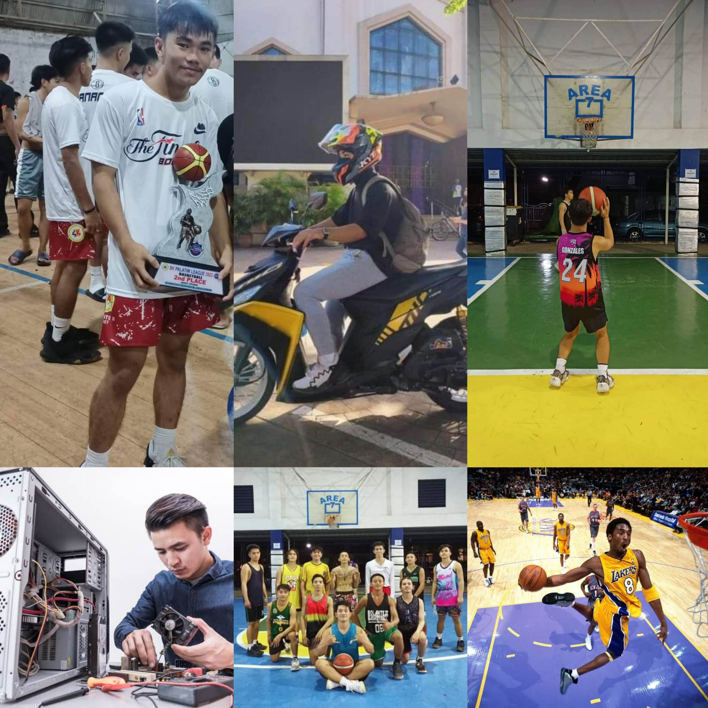
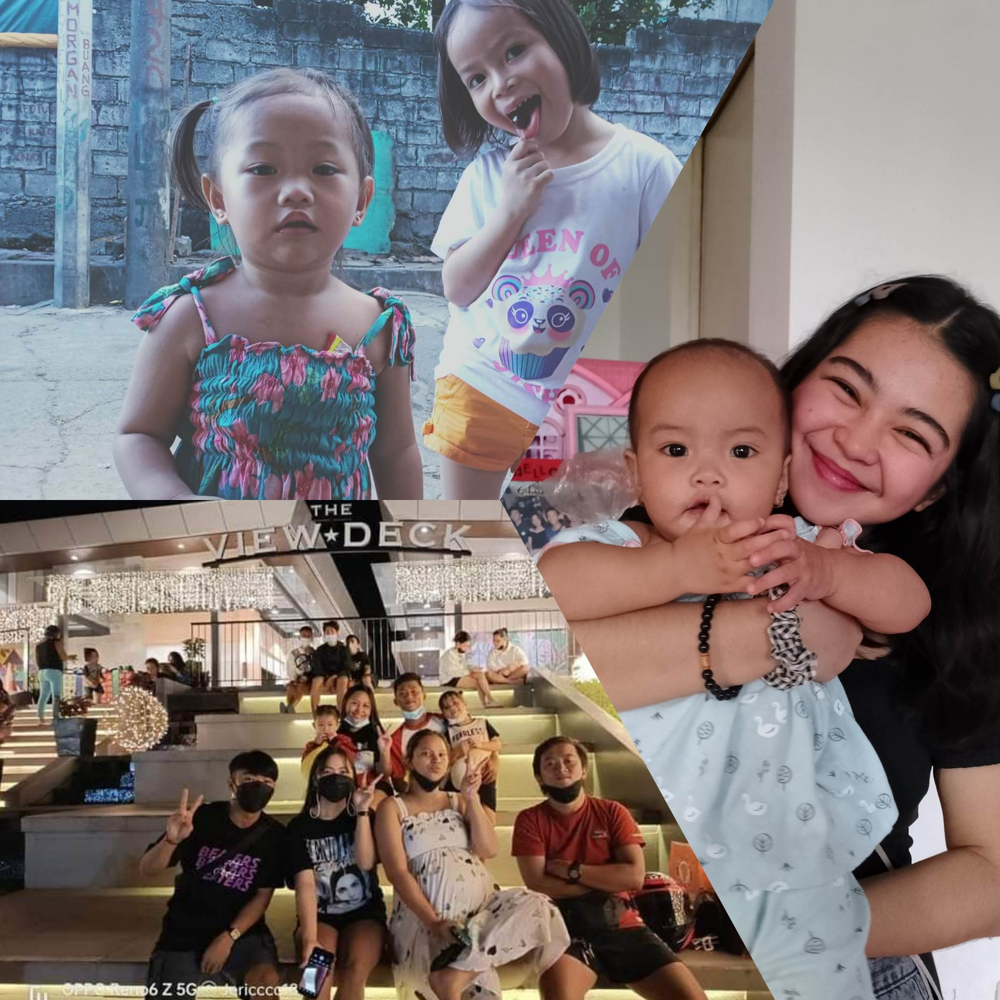

ALL ABOUT MY SELF

Hello, I'm Jeremiah M. Gonzales. 19 years old,
I live at 1921 F. Soriano St. Palatiw Pasig City. Currently first year college student at Pamantasan ng Lungsod ng Pasig
taking the Bachelor of Science in Information Technology. Also graduated from Rizal High School taken ICT strand
,I'm a honor student when I graduated at Rizal High School, my high school life taught me a lot. I'm a sports enthusiast, I know a lot of sports
but the one I really love is playing Basketball. I also a good listener, I'd love to cook for my family and friends because they always praise me
on my cooking skills. I know how to drive a motorcycle and I love to go in far places. As a student, I have many dreams in my mind and I want to make all of them not only for myself but also for everybody surrounds me.
One of my dream is to be a Professional Basketball Player or to be a Computer Technician, have a great family with the one I love today and be successful together.
My favorite bible verse is Philippians 4:13 "I can do all things through christ which strengtheneng me". With the help of God we can do everything, with his guidance
it will lead into a wonderful outcome. My weaknesses and strengths, knowing yourself first makes you feel more confident, for me this is the first thing you need to
perceive. Followed by trying somethings you never experience, taking the indicated it can allow you to know yourself more. My strengths are God, family, friends, and love ones
they're the one who helped me through ups and downs,they also taught me many things not only for studying but also for life, to be brave, mindful, strategic. My weaknesses comes up
with the people surrounds me, somethings that my skills and ability can't afford, but I'm consistent to be better with my weaknesses, being shy is also one of my weaknesses, sometimes
things meant to hard for me, my weakness is myself sometimes I'm afraid to do other things that I haven't experience. Lastly being lazy is most of my weakness, I always want to sleep
over to do things that are essentialy needed
MY FAMILY

My family is consist of people who I loved, generous, amatorious. I have two older brother and one older sister and I'm the youngest and I have three niece which are Jacel, Chesca and Janaya. My father is Ruben M. Gonzales for me he is the
most generous papa I know, he always gives us things that makes us happy. My Mother Vilma M. Gonzales she the best mama in the
world, she's willing to do everything for our sake, and she loves us more than herself. My eldest brother named
Jeric Gonzales like my papa he is also generous to us, but he is short tempered like me, maybe it is in our blood
My second brother is Charles Gonzales he is the most strategic, but also a generous one, he and our older brother
always taught many things in playing basketball because these two are great players for me like our papa. Lastly my older sister
Jade Gonzalesshe is kind, hardworking and helpful. As you know she is in her last semester on college and she is graduating this year. Like the people who surrounds me, I adopt good deeds from them.
We might not always get along, but when we do, I swear I will be a great day. They inspires me to strive more everyday, not just for
myself but for them. They push me to excel nowadays so that I will have a decent future ahead. Family is always the finest to have on your side because you
can tell they are trully supporting you.
MY FUTURE CAREER

These might be my future career, an IT or an Professional Basketball Player. Despite on I have weaknesses on other field, I'm trying to be
better on other aspects of IT field. I want to become an IT because when I'm young I used to play a lot of online games, and with that
enticement I'd like to expand my knowledge about computers. Many people said that IT is in demand, and they're all right because right now
on our generation it most likely to use gadgets. Also I want to be a Professional Basketball Player, the reason on this is, when I started to
watch basketball games in my younger year I amaze to them and I want to be like them not their attitude but the level of their playing skills. On that both career
the salary are both indeed high and that's why I keep pursuing these two careers.